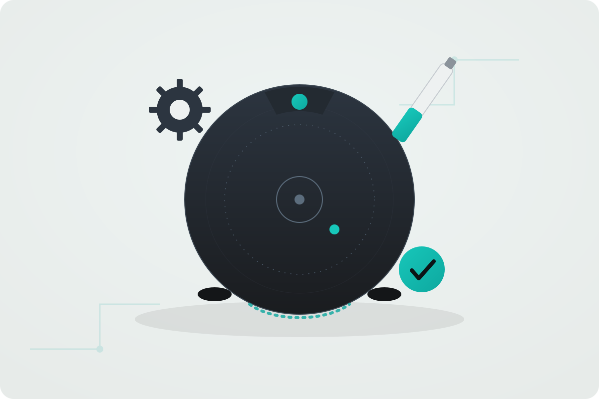
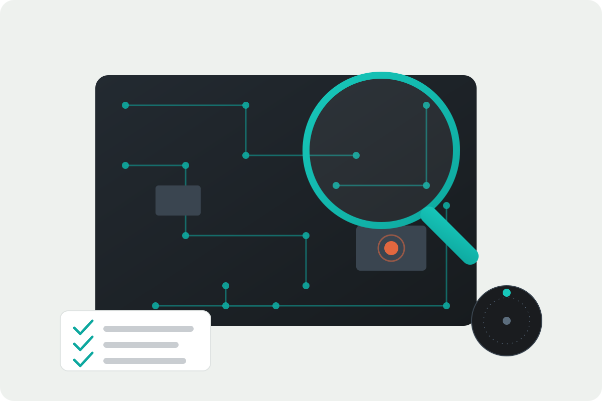
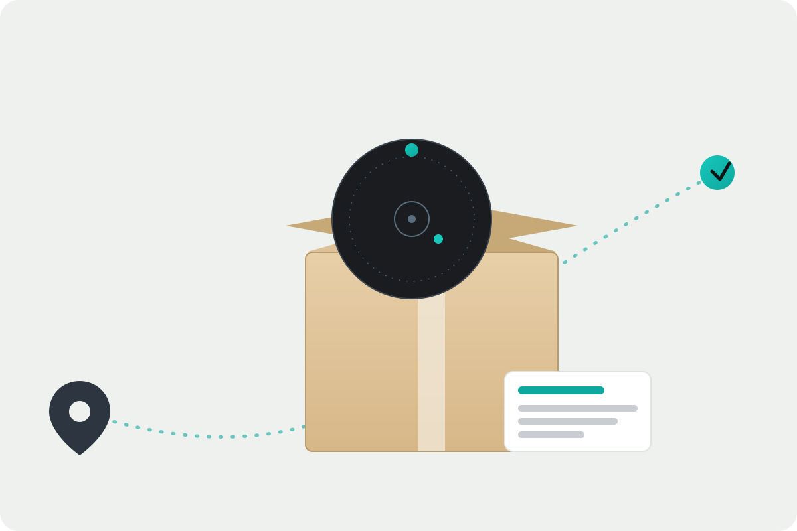

Especialización exclusiva en Rowenta
Trabajamos únicamente con robots aspiradores de la marca Rowenta, lo que nos permite conocer bien sus averías más habituales y sus componentes.
Diagnosticamos y reparamos robots aspiradores Rowenta con problemas de carga, batería, navegación, sensores, ruedas, cepillos o conexión Wi‑Fi. Presupuesto claro antes de intervenir y garantía sobre cada reparación.
Servicio técnico independiente. No somos servicio técnico oficial Rowenta y no gestionamos equipos cubiertos por la garantía del fabricante.
Trabajamos únicamente con robots aspiradores de la marca Rowenta, lo que nos permite conocer bien sus averías más habituales y sus componentes.
Conoces el coste antes de que se realice cualquier intervención sobre tu equipo.
Las intervenciones realizadas cuentan con garantía según las condiciones del servicio.
Solicita la recogida de tu robot aspirador Rowenta sin necesidad de desplazarte.

Diagnosticamos y reparamos robots aspiradores Rowenta con averías electrónicas, mecánicas o de software. Revisamos el equipo, identificamos el origen del problema y te informamos del presupuesto antes de intervenir.
Estas son algunas de las incidencias que revisamos con más frecuencia en equipos Rowenta.
El robot no carga, no enciende, se apaga solo o la base de carga presenta fallos de contacto.
Pérdida de autonomía, apagados repentinos o batería degradada que ya no mantiene la carga.
Golpes constantes, giros erráticos, mapeo incorrecto o errores en los sensores de suelo y obstáculos.
Ruidos anómalos, pérdida de movimiento, cepillos que no giran o bloqueos mecánicos.
Problemas de emparejamiento, pérdida de conexión o errores al controlar el robot desde la aplicación.
Revisión de bases de carga, contactos, filtros y depósitos para un funcionamiento correcto.
Antes de reparar tu robot aspirador Rowenta realizamos un diagnóstico técnico para localizar con precisión la avería. El diagnóstico tiene un coste de 20 € + IVA e incluye la revisión completa del equipo y el presupuesto de la reparación correspondiente.
Solo con el diagnóstico realizado podemos ofrecerte un presupuesto ajustado a la avería real de tu robot aspirador Rowenta, evitando sorpresas en el coste final.

Cuéntanos el modelo de tu robot aspirador Rowenta y la avería que presenta.
Trae el equipo a nuestras instalaciones o solicita la recogida desde cualquier punto de Península.
Revisamos el equipo y localizamos el origen exacto de la avería.
Te informamos del coste de la reparación antes de realizar cualquier intervención.
Tras tu aceptación reparamos el equipo, comprobamos su funcionamiento y te lo entregamos.
Si no puedes acercarte a nuestras instalaciones, solicita la recogida de tu robot aspirador Rowenta y lo recogemos en cualquier punto de la Península para su diagnóstico y reparación.
Solicita tu recogida ahora
Consulta las valoraciones publicadas por clientes sobre nuestro servicio y atención.
Visita nuestro canal y descubre contenido técnico sobre reparación de robots aspiradores.
C. de Joaquín María López, 26, 28015 Madrid. Metro Islas Filipinas, Canal y Moncloa. Aparcamiento público en Calle Blasco de Garay 61.
El formulario se envía directamente mediante la Gmail API configurada en Vercel. No abre ningún gestor de correo y no utiliza servicios externos de terceros.
Diagnóstico: 20 € + IVA. Te informamos del presupuesto de reparación antes de intervenir.
RowentaTech está especializado exclusivamente en el servicio técnico y la reparación de robots aspiradores de la marca Rowenta.
El diagnóstico técnico tiene un coste de 20 € + IVA. Incluye la revisión completa del robot aspirador y la localización de la avería antes de presupuestar la reparación.
Sí. Puedes utilizar el botón de solicitud de recogida para gestionar el envío desde cualquier punto de Península.
De lunes a viernes de 09:30 a 18:00. Sábados y domingos permanece cerrada la atención presencial. La atención telefónica y por WhatsApp está disponible 24 horas, 365 días.
No. Somos un servicio técnico independiente y no gestionamos reparaciones cubiertas por la garantía oficial del fabricante.
Sí, las reparaciones realizadas cuentan con garantía sobre la intervención según las condiciones del servicio.
Un robot aspirador Rowenta que no enciende, no carga o no vuelve a la base suele tener un origen concreto: un fallo en la alimentación, una batería degradada o un problema en los contactos de la base de carga. Por eso, antes de sustituir piezas, en RowentaTech realizamos un diagnóstico técnico que permite identificar la causa real de la avería y evitar reparaciones innecesarias.
Otras averías habituales están relacionadas con la navegación: golpes constantes, giros erráticos o mapeo incorrecto suelen deberse a sensores sucios, dañados o descalibrados. También revisamos ruedas y cepillos bloqueados, motores con ruidos anómalos y errores de conexión Wi‑Fi que impiden controlar el robot desde la aplicación.
Un mantenimiento periódico —limpieza de cepillos, filtros y contactos de carga— ayuda a prevenir buena parte de las averías más comunes en robots aspiradores Rowenta. Si tu equipo presenta cualquiera de estos síntomas, puedes contactar con nuestro servicio técnico en Madrid o solicitar la recogida desde cualquier punto de la Península.